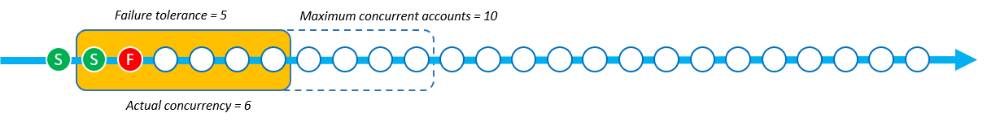

Parámetro Modo de simultaneidad
Modo de simultaneidad es un parámetro de StackSetOperationPreferences que permite elegir cómo se comporta el nivel de simultaneidad durante las operaciones del conjunto de pilas. Puede elegir entre los siguientes modos:
-
Tolerancia estricta a errores: esta opción reduce de forma dinámica el nivel de simultaneidad para garantizar que el número de cuentas fallidas nunca supere el valor de Tolerancia a errores + 1. La simultaneidad real inicial se establece en el valor más bajo entre el valor de Número máximo de cuentas simultáneas o el valor de Tolerancia a errores + 1. A continuación, la simultaneidad real se reduce proporcionalmente en función del número de errores. Este es el comportamiento predeterminado.
-
Tolerancia ligera a errores: esta opción desacopla Tolerancia a errores de la simultaneidad real. Esto permite que las operaciones del conjunto de pilas se ejecuten en el nivel de simultaneidad establecido por el valor de Número máximo de cuentas simultáneas, independientemente del número de errores.
Tolerancia estricta a errores reduce la velocidad de implementación a medida que se producen errores en las operaciones del conjunto de pilas, ya que la simultaneidad disminuye en cada error. Tolerancia ligera a errores prioriza la velocidad de implementación y, al mismo tiempo, aprovecha las capacidades de seguridad de AWS CloudFormation. Esto le permite revisar y abordar los errores operativos de conjuntos de pilas para detectar problemas comunes, como los relacionados con los recursos existentes, las cuotas de servicio y los permisos.
Para obtener más información sobre los errores en las operaciones de pila de StackSets, consulte Motivos comunes para el fallo en una operación de la pila.
Para obtener más información sobre Número máximo de cuentas simultáneas y Tolerancia a errores, consulte Opciones de operaciones con conjuntos de pilas.
Cómo funciona cada modo de simultaneidad
Las siguientes imágenes proporcionan una representación visual de cómo funciona cada Modo de simultaneidad durante una operación de conjunto de pilas. La cadena de nodos representa una implementación en una Región de AWS y cada nodo es una Cuenta de AWS objetivo.
- Tolerancia estricta a errores
-
Cuando una operación de conjunto de pilas que utiliza Tolerancia estricta a errores tiene el valor de Tolerancia a errores establecido en 5 y el valor de Número máximo de cuentas simultáneas en 10, la simultaneidad real es 6. La simultaneidad real es 6 porque el valor de Tolerancia a errores de 5 + 1 es inferior al valor de Número máximo de cuentas simultáneas.
La siguiente imagen muestra el impacto que el valor de Tolerancia a errores tiene en el valor de Número máximo de cuentas simultáneas y el impacto que ambos tienen en la simultaneidad real de la operación del conjunto de pilas:

Cuando comienza la implementación y hay instancias de pila fallidas, la simultaneidad real se reduce para ofrecer una experiencia de implementación segura. La simultaneidad real se reduce de 6 a 5 cuando StackSets no logra implementar una instancia de pila.

El modo Tolerancia estricta a errores reduce la simultaneidad real proporcionalmente al número de instancias de pila fallidas. En el siguiente ejemplo, la simultaneidad real se reduce de 5 a 3 cuando StackSets no logra implementar 2 instancias de pila más, lo que eleva el total de instancias de pila con errores a 3.

StackSets no puede realizar la operación del conjunto de pilas cuando el número de instancias de pila con errores es igual al valor definido de Tolerancia a errores + 1. En el siguiente ejemplo, StackSets no realiza la operación cuando hay 6 instancias de pila con errores y el valor de Tolerancia a errores es 5.

En este ejemplo, StackSets implementó 9 instancias de pila (3 correctas y 6 con errores) antes de detener la operación del conjunto de pilas.
- Tolerancia ligera a errores
-
Cuando una operación de conjunto de pilas que utiliza Tolerancia ligera a errores tiene el valor de Tolerancia a errores establecido en 5 y el valor de Número máximo de cuentas simultáneas en 10, la simultaneidad real es 10.

Cuando comienza la implementación y hay instancias de pila con errores la simultaneidad real no cambia. En el siguiente ejemplo, se produjo un error en una operación de pila, pero la simultaneidad real se mantiene en 10.

La simultaneidad real se mantiene en 10 incluso después de que se produzcan 2 errores más en las instancias de pila.

StackSets no puede realizar la operación del conjunto de pilas cuando el número de instancias de pila con errores supera el valor de Tolerancia a errores. En el siguiente ejemplo, StackSets no realiza la operación cuando hay 6 instancias de pila con errores y el recuento de Tolerancia a errores es 5. Sin embargo, la operación no finalizará hasta que se completen las operaciones restantes de la cola de simultaneidad.

StackSets sigue implementando instancias de pila que ya están en la cola de simultaneidad. Esto significa que la cantidad de instancias de pila con errores puede ser superior al valor de Tolerancia a errores. En el siguiente ejemplo, hay 8 instancias de pila con errores porque a la cola de simultaneidad aún le quedaban 7 operaciones por realizar, a pesar de que la operación del conjunto de pilas había alcanzado el valor de Tolerancia a errores de 5.
![Se trata de una operación de pila con Tolerancia ligera a errores. El valor de Tolerancia a errores está establecido en 5 y, el de Número máximo de cuentas simultáneas, en 10. Se ha producido un error en 8 operaciones de pila en total y la simultaneidad real se mantiene en 10. Se ha producido un error en un total de 8 instancias de pila porque a la cola de simultaneidad aún le quedaban 7 operaciones por realizar, incluso después de superar el umbral de tolerancia a errores de 5. Cuando se alcanzó el umbral de tolerancia a errores y se completaron las operaciones de la cola de simultaneidad, se produjo un error en la operación del conjunto de pilas.](images/concurrency-soft-failure-tolerance-5.png)
En este ejemplo, StackSets implementó 15 instancias de pila (7 correctas y 8 con errores) antes de detener la operación de pila.
Elección entre Tolerancia estricta a errores y Tolerancia ligera a errores en función de la velocidad de implementación
La elección entre los modos Tolerancia estricta a errores y la Tolerancia ligera a errores depende de la velocidad preferida de implementación del conjunto de pilas y del número permitido de errores de implementación.
En las siguientes tablas, se muestra cómo gestiona cada modo de simultaneidad una operación de conjunto de pilas con errores al intentar implementar un total de 1000 instancias de pila. En cada escenario, el valor de Tolerancia a errores se establece en 100 instancias de pila y el valor de Número máximo de cuentas simultáneas se establece en 250 instancias de pila.
Si bien StackSets en realidad pone en cola las cuentas como una ventana deslizante (consulte Cómo funciona cada modo de simultaneidad), este ejemplo muestra la operación en lotes para demostrar la velocidad de cada modo.
Tolerancia estricta a errores
En este ejemplo, en el que se utiliza el modo Tolerancia estricta a errores, se reduce la simultaneidad real en relación con el número de errores que se producen en cada lote anterior. Cada lote tiene 20 instancias con errores, lo que reduce en 20 la simultaneidad real del lote siguiente hasta que la operación del conjunto de pilas alcance el valor de Tolerancia a errores de 100.
En la siguiente tabla, la simultaneidad real inicial del primer lote es de 101 instancias de pila. La simultaneidad real es 101 porque es el valor más bajo de Número máximo de cuentas simultáneas (250) o Tolerancia a errores (100) + 1. Cada lote contiene 20 implementaciones de instancias de pila con errores, lo que reduce la simultaneidad real de cada lote siguiente en 20 instancias de pila.
| Tolerancia estricta a errores | Lote 1 | Lote 2 | Lote 3 | Lote 4 | Lote 5 | Lote 6 |
|---|---|---|---|---|---|---|
| Recuento de simultaneidad real | 101 | 81 | 61 | 41 | 21 | - |
| Recuento de instancias con errores | 20 | 20 | 20 | 20 | 20 | - |
| Recuento de instancias de pila correctas | 81 | 61 | 41 | 21 | 1 | - |
La operación que utilizó Tolerancia estricta a errores completó 305 implementaciones de instancias de pila en 5 lotes cuando la operación del conjunto de pilas alcanzó el valor de Tolerancia a errores de 100 instancias de pila. La operación de conjunto de pilas implementa correctamente 205 instancias de pila antes de que se produzca un error.
Tolerancia ligera a errores
En este ejemplo, en el que se utiliza el modo Tolerancia ligera a errores, se mantiene el mismo recuento de simultaneidad real definido por el valor de Número máximo de cuentas simultáneas de 250 instancias de pila, independientemente del número de instancias con errores. Las operaciones del conjunto de pilas mantienen la misma simultaneidad real hasta que alcanzan el valor de Tolerancia a errores de 100 instancias.
En la siguiente tabla, la simultaneidad real inicial del primer lote es de 250 instancias de pila. La simultaneidad real es 250 porque el valor de Número máximo de cuentas simultáneas está establecido en 250 y el modo Tolerancia ligera a errores permite a StackSets utilizar este valor como la simultaneidad real, independientemente del número de errores. A pesar de que hay 50 errores en cada uno de los lotes de este ejemplo, la simultaneidad real no se ve afectada.
| Tolerancia ligera a errores | Lote 1 | Lote 2 | Lote 3 | Lote 4 | Lote 5 | Lote 6 |
|---|---|---|---|---|---|---|
| Recuento de simultaneidad real | 250 | 250 | - | - | - | - |
| Recuento de instancias con errores | 50 | 50 | - | - | - | - |
| Recuento de instancias de pila correctas | 200 | 200 | - | - | - | - |
Con el mismo valor de Número máximo de cuentas simultáneas y de Tolerancia a errores, la operación que utilizó el modo Tolerancia ligera a errores completó 500 implementaciones de instancias de pila en 2 lotes. La operación de conjunto de pilas implementa correctamente 400 instancias de pila antes de que se produzca un error.
Para elegir el modo de simultaneidad, utilice la AWS Management Console
Puede elegir el modo de simultaneidad para los conjuntos de pilas nuevos o existentes en la página Configurar opciones de implementación.

Para obtener más información sobre la creación de nuevos conjuntos de pilas mediante la AWS Management Console, consulte Creación de un conjunto de pilas.
Para obtener más información sobre la actualización de pilas con conjuntos de cambios mediante la AWS Management Console, consulte Actualización del conjunto de pilas mediante la consola de AWS CloudFormation.
Para obtener más información sobre la eliminación de nuevos conjuntos de pilas mediante la AWS Management Console, consulte Eliminación de un conjunto de pilas mediante la AWS Management Console.
Para elegir el modo de simultaneidad, utilice la AWS Command Line Interface
Puede utilizar el parámetro ConcurrencyMode con los siguientes comandos de StackSets:
Estos comandos tienen un parámetro existente llamado --operation-preferences que puede usar la configuración ConcurrencyMode. ConcurrencyMode se puede establecer en uno de los siguientes valores:
-
STRICT_FAILURE_TOLERANCE -
SOFT_FAILURE_TOLERANCE
En el siguiente ejemplo, se crea una instancia de pila utilizando el ConcurrencyMode STRICT_FAILURE_TOLERANCE, con el valor de FailureToleranceCount establecido en 10 y el valor de MaxConcurrentCount establecido en 5:
aws cloudformation create-stack-instances \ --stack-set-nameexample-stackset\ --accounts123456789012\ --regionseu-west-1\ --operation-preferences ConcurrencyMode=STRICT_FAILURE_TOLERANCE,FailureToleranceCount=10,MaxConcurrentCount=5
Para obtener más información sobre la creación de nuevos conjuntos de pilas mediante AWS Command Line Interface (CLI), consulte Creación de un conjunto de pilas.
Para obtener más información sobre la actualización de pilas con conjuntos de cambios mediante la AWS CLI, consulte Actualización del conjunto de pilas mediante la AWS CLI.
Para obtener más información sobre la eliminación de nuevos conjuntos de pilas mediante la AWS CLI, consulte Eliminación de un conjunto de pilas mediante la AWS CLI.